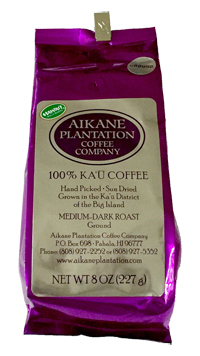

中炒り焙煎豆
100%カウ・コーヒー。ハワイ島カウ地区で育ったコーヒーの木から手摘みされ、太陽の下で自然乾燥されました。コーヒーミルで挽いてお召し上がりください。227gのパッケージをご用意しています。
中炒り焙煎挽き豆
100%カウ・コーヒー。ハワイ島カウ地区で育ったコーヒーの木からたった3～5%しか収穫できないピーベリー（丸豆）だけを焙煎しました。コーヒーミルで挽いてお召し上がりください。227gのパッケージをご用意しています。
In 1894 "Papa" J.C. Searle planted his first crop of coffee on his Ka'u Hawai'i plantation. His coffee became very popular and received many favorable comments from the local media. However "Papa" was but one man and could not compete with the sugar plantations for workers. "Papa's" dream was lost but not forgotten.
Over 100 years later J.C. Searls's greatgranddaughter is fulfilling his dream...Aikane Plantation Coffee Company was established.
The coffee you are aboout to enjoy was really born in 1894. We belive for this reason and the fact that our coffee is grown exclusively in Ka'u, it has a perfect blend of rechness and flavor.
Enjoy and Mahalo, Merle and phil becker.
1894年、現オーナーの曽祖父 J.C. Searle がハワイ島のカウ地区にコーヒーの苗を植樹したのが始まりです。その後、彼のコーヒーは大人気となり地元メディアから多くの好評を受けました。しかし、コーヒーの収穫は少なく同時にサトウキビが主要産業となったためコーヒーの出荷は行われなくなりました。
100年後の1990年代後半にカウ地区の特産だったサトウキビの生産が終了すると同時に、曽祖父の孫娘にあたる現オーナー夫妻がオアフ島から移住。曽祖父が植えたコーヒー畑を整備するとともに、100年以上前のコーヒーの木から収穫したコーヒー豆の出荷を本格的に始めアイカネ・プランテーション・コーヒー・カンパニーを設立しました。そして、近隣の農家にもは1894年に植えられたのコーヒーの木から接ぎ木され大切に育てた苗木を分けたことが、カウ地区のカウ・コーヒー・ブランドになりました。あなたが召し上がるコーヒーは1894年から受け継がれた木から収穫された歴史を積み重ねたコーヒーです。
農園の栽培方法は、100年前から変わること無く化学農薬は使わずにマカダミアナッツの外殻などの自然の堆肥を使用し、太陽光や雨水などの自然の恵みだけで大切に育てられています。収穫時には摘み取りから豆の選別、天日干しまですべて人の手で作業を行っているため最高の品質を保っています。
このプレミアムな100％カウ・コーヒーをどうぞお楽しみください。マハロ。
メルル＆フィル・ベッカーより。
オバマ氏の大統領就任の際、ホワイトハウスの祝賀会で提供されて以来、カウ・コーヒーの名は一躍世界中に広がりました。話題性だけはありません。スペシャルティ・コーヒー・アソシエーション・オブ・アメリカ主催のカッピングコンテストでは、2007年以来ハワイ産のコーヒーで唯一5年連続で全米トップ10に入ったこともある、文字通り超プレミアムなコーヒーです。また、2010年から始まったハワイ州コーヒー協会主催のカッピングコンテストでは2年連続でトップを獲得しています。
現在でもハワイ州知事が外遊の際のお土産として、アイカネ・プランテーション・コーヒー・カンパニーのカウ・コーヒーが選ばれています。
また、アイカネ・プランテーション・コーヒー・カンパニーのカウ・コーヒーは、ハワイ州農業局の厳しい審査をクリアし、カウ地区のコーヒー農園では最初に「Seal of Quality」の承認を得た安全で高品質なコーヒーです。
今度は、あなた自身でこの味をお確かめください。
GROUND 56g, About 12 Cups
中炒り焙煎挽き豆56g、ペーパードリップ用、おおよそ12杯分。
カウ・コーヒーを初めて経験する方向けにご用意しました。どんな味かトライしてみてください。きっと気に入っていただけると思います。
WHOLE BEAN 227g, About 48 Cups
中炒り焙煎豆227g、ミルで挽いてください、おおよそ48杯分。
アイカネ・プランテーション・コーヒー・カンパニーが焙煎した豆をそのままパッケージ。カウ・コーヒーの中で最も歴史のあるコーヒーを農園オリジナルの味でお楽しみいただけます。
GROUND 227g, About 48 Cups
中炒り焙煎挽き豆227g、ペーパードリップ用、おおよそ48杯分。
アイカネ・プランテーション・コーヒー・カンパニーが焙煎した豆を挽いてパッケージにしました。オフィシャルな味を気軽にいつでもお楽しみいただけます。
PEABERRY(WHOLE BEAN), About 48 Cups
ピーベリー中煎り焙煎豆、ミルで挽いてください。おおよそ48杯分。
コーヒーの生豆には、まれにピーベリー（丸豆）が生まれます。フラットビーンと呼ばれる普通の豆はコーヒーの実の中に向かい合った形で対で入っていますが、ピーベリーは一つだけしか入っていません。その形が丸いことから区別されました。ピーベリーは全収穫量のたった3～5％しか採れない貴重な豆。この豆だけを手作業で選別して焙煎したのがこのパッケージです。元々は同じ木から収穫された豆ですので、味に大きな違いはありませんが、コーヒー通の間では豆が丸いことから焙煎時に焼きムラが少なく味も柔らかな風合いが出る、と言う意見もあります。
コーヒー農園によっては選別せず、フラットベリーとピーベリーを混在して出荷しているところもありますが、それでは味の違いを楽しめません。この希少なパッケージでピーベリーの味比べをしてみてはいかがでしょうか？
1894年、J.C. Searleがハワイ島のカウ地区にコーヒーの苗を植樹したのが始まりです。彼のコーヒーは大人気となり、地元メディアから多くの好評を受けました。しかし、サトウキビ栽培が主力産業となったためしばらくコーヒー栽培は行われませんでした。
100年後の1990年代後半にカウ地区の特産だったサトウキビの生産が終了すると同時に、初代曽祖父の孫娘にあたる現オーナー夫妻がオアフ島から移住。荒れたコーヒー畑を整備するとともにコーヒーの栽培を本格的に始め現在に至ります。
また、ハワイ王国最後の女王となったリリウオカラニ女王とも親交があり、手紙や写真が現在でも大切に保管されています。
化学農薬は使わずマカダミアナッツの外殻などの自然の堆肥を使用し、太陽光や雨水などの自然の恵みだけで大切に育てています。収穫時には手摘みから豆の選別、天日干しまですべて人の手で作業を行い最高な品質を保っています。
そして、ハワイ州農政局の厳しい基準をクリアした農産物とその加工品だけに使用が許される「Seal of Quality」マークを与えられました。安全で美味しく高品質なコーヒーです。
ハワイ島カウ地区のコーヒー農園の数は、コナ地区の約700軒に対してわずかに50軒ほどしかありません。アイカネ農園の収穫量もそれほど多くはありませんのでほとんど流通しておらず、もっとも入手困難で希少なコーヒーです。さらに、2011年10月には、コーヒー・チェーン店のスター・バックスで「世界の特選コーヒー」として販売したことから世界中でブームとなりさらに豆不足になりました。
現在は、ハワイ島コナの街とオアフ島ワイキキビーチ前のハイアット・リージェンシー・ワイキキ・リゾート・ホテルで行われるファーマーズ・マーケット（生産者直売所）にてわずかながら販売しているだけになりました。
ラニカイが輸入販売するアイカネ・プランテーション・コーヒー・カンパニーのカウ・コーヒーは、アイカネ農園オリジナルの焙煎でパッキングされた商品です。ブレンドも日本での焙煎も行っていないため、アイカネ農園がおすすめする一番美味しいコーヒーをそのまま召し上がって頂けます。
パープルのパッケージが目に鮮やかですので、きっとどこかで目にすることでしょう。
ハワイ島カウ地区は、マウナロア山とキラウェア火山に挟まれたハワイ島最南端です。有名なコナ・コーヒーの産地とはマウナロア山脈を挟んで反対側にあり、同じハワイ島南部でも気象条件がコナ地区とカウ地区では異なります（カウ地区は雨が多く降ります）。この気象条件と肥えた土地で自然農法により育てられたカウ・コーヒーの特徴は、酸味と苦味があまりなくそれに変わりフルーティな甘味が感じられる飲みやすさにあります。
このカウ地区で生産されたカウ・コーヒーは、スペシャルティ・コーヒー・アソシエーション・オブ・アメリカ主催のコンテストで2007年から2012年までの5年間トップ10入りを果たしました。特にトップ10は4段階の評価の中で最高ランクのスペシャリティ・コーヒーのカテゴリーとなっています。
また、2010年から始まったハワイ州コーヒー協会主催のカッピングコンテストでは、2年連続でトップになりました。
その飲みやすさと美味しさは、世界中のコーヒー通をも唸らせています。
アイカネ・プランテーション・コーヒー・カンパニーがある場所は、カウ地区の高原で遠く太平洋が望める場所にあります。農園へと続く道はハワイ島の幹線道路では無いため、大型バスがやっと通れるほどの細い山道しかありません。地元の人さえ通らない農道のような道で、同じカウ・コーヒー農園とも離れていて農園の周りは何もありません。周囲は昔のサトウキビ畑のサウキビが野生化し生い茂っている中に、アイカネ農園のゲートが建っています。ゲートからアイカネ農園の敷地へと入ると母屋と作業小屋、倉庫が立ち並んでいます。ここを取り囲むようにコーヒー畑が続いています。
このような場所に訪れる人はほとんどいなかったのですが、最近はこの幻のコーヒー豆を買い求める観光客やバイヤーが多く訪れるようになりました。
現在も、農園はフィル＆メルル・ベッカー夫妻によって伝統を守りながら経営しています。
カウ・コーヒーはどこで買えますか？
ラニカイ（仙台市青葉区）かオンラインショップにてお求め頂けます。
ラニカイでは、アイカネ・プランテーション・コーヒー・カンパニーが焙煎したオフィシャル・パッケージを直接買い付けしています。（ラニカイでは焙煎やブレンド、パッケージの詰替など一切行っておりません。）
ラニカイの営業日は不定期ですので、直接お越し頂く際は事前にご連絡をお願いします。
在庫数には限りがありますので、お早めにお求めください。仕入れは随時行っていますが、農園にも在庫数が少ないので入手困難となる場合もあります。
どんな淹れ方が美味しいですか？
ラニカイではフレンチプレスをお薦めします。
ドリップ式でももちろん美味しく召し上がれますが、ラニカイ・カフェ（ラニカイにある縁側カフェ）ではフレンチプレスで淹れています。豆の量はスプーン×人数分がお薦めです。抽出時間は、ノーマルなお味がお好みなら3分。苦味を楽しみたい方なら4分です。
フレンチプレスで淹れるコーヒーの特徴は、コーヒーのしっかりした味わいと鼻から抜けるフルーティな香りが楽しめること、さらにカップの表面に浮いたコーヒー・オイルもお楽しみのひとつ。ドリップ式で淹れたコーヒーと比べると、多少粉っぽく感じられるかもしれませんが、その分深い味わいを楽しめますので、是非おすすめします。
挽き豆はペーパードリップ用ですが、フレンチプレスでもお楽しみいただけます。
Seal of Qualityって何ですか？
ハワイ州農政局に品質を保証された承認証です。
ハワイ州農政局では、ハワイ州産の農産物とその加工品についてその品質に厳しい基準を定めています。その基準をパスした商品だけにハワイ州農政局承認のマークを使用する許可が与えられます。アイカネ・プランテーション・コーヒー・カンパニーのカウ・コーヒーは、この基準に一番最初にクリアしたコーヒーです。
ハワイ出身のオバマ大統領もホワイトハウスで愛飲し、ハワイ州知事は外遊時にこのカウ・コーヒーを持参するなど、政府関係者にもハワイを代表するオフィシャルなコーヒーとして扱われています。
56g
227g

Get started227g
ラニカイがカウ・コーヒーをお薦めします
地球上でコーヒーの木が生育するのは、赤道を挟んで北回帰線と南回帰線の間。ここをコーヒーベルトと呼んでいます。でもどの土地でもコーヒーの木が生育する訳ではありません。コーヒーの木が生育する特別な環境が必要です。
ハワイもちょうどコーヒーベルトに位置し、コーヒーの木が生育できる環境を持っています。すなわち、雨と気温と水はけの良い土地です。
ハワイの各島でもコーヒー豆は収穫され、それぞれの土地の名前が付けられています。カウ・コーヒーはハワイ島のカウ地区で収穫される豆。有名なコナの豆が採れる土地と山脈を挟んで隣にあります。ただし、コーヒー豆の生産農家はざっと50軒ほどしかなく、コナ地区に比べて15分の1です。
地元ハワイのスーパー・マーケットでもアイカネ・プランテーション・コーヒー・カンパニーの緑のパッケージを見かけることはまれで、週末に開催されるファーマーズ・マーケット（農家直売市）のテントで細々と売られている程度です。
したがって、コーヒー通の間では幻のコーヒーと言われていました。
高品質なコーヒーを育てるのに手間は惜しまない
そのカウ・コーヒーの中でも、120年以上も前からコーヒーを収穫しているのが、アイカネ・プランテーション・コーヒー・カンパニー。ハワイ島カウ地区に入植した現オーナーの曽祖父が、コーヒーの苗木をこの土地に植えたのがその始まりです。一時はサトウキビがハワイの主力産業となり、このコーヒー栽培は衰えてしまいましたが、木は伐採されること無く育成されていました。現在もその時の原木と株分けされた木からコーヒー豆が収穫されています。
その伝統と歴史のあるアイカネ・プランテーション・コーヒー・カンパニーは、自然農法で大切に育てた木から現在でも手摘みで収穫し、手作業で豆の選別を行っています。その品質はハワイ州農政局からもシール・オブ・クオリティ（ハワイ産の農産物とその加工品の品質保証）として証明されています。
この地で収穫されるカウ・コーヒーはその味が、スペシャルティ・コーヒー・アソシエーション・オブ・アメリカ主催のコンテストでスペシャリティ・コーヒーとしてトップ10入を果たしています。つまり、アメリカ国内で流通するコーヒー豆の中で10位以内の美味しさと謳われています。
上質なコーヒーをあなたにも
このサイトでご紹介しているパッケージは、アイカネ・プランテーション・コーヒー・カンパニーが現地工場で焙煎しパッケージした商品です。焙煎も挽き方も農園オーナーが一番美味しいと考えるオフィシャルな工程を商品化したものです。
パッケージはコーポレート・カラーでもあるパープルの袋。一度見たら忘れられません。この袋には、コーヒー豆から発生するガスを外に放出し空気を袋の中に通さない一方通行バルブ加工がされています。これにより長期保存が可能で、いつでも一番美味しいコーヒーを召し上がってい頂けます。
貴重で価値が高いアイカネ・プランテーション・コーヒー・カンパニーのカウ・コーヒー。今度はあなたがこの味をお確かめください。きっと、これまでのコーヒーよりさらに上品な味を楽しんでいただけるはずです。
世界中のコーヒー通が待ち焦がれているカウ・コーヒー。ひとりでも多くの方に、この素晴らしいアイカネ・プランテーション・コーヒー・カンパニーのカウ・コーヒーを提供するのがラニカイの誇りです。
アイカネ・プランテーション・コーヒー・カンパニーのカウ・コーヒーは、オフィシャル・パートナーのラニカイ（仙台市青葉区）で取り扱っています。お問い合わせはこちらまで。